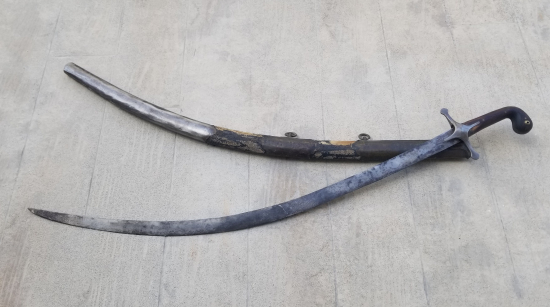
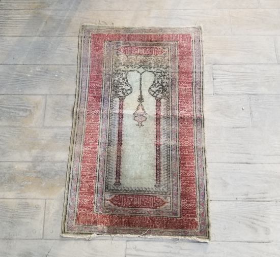
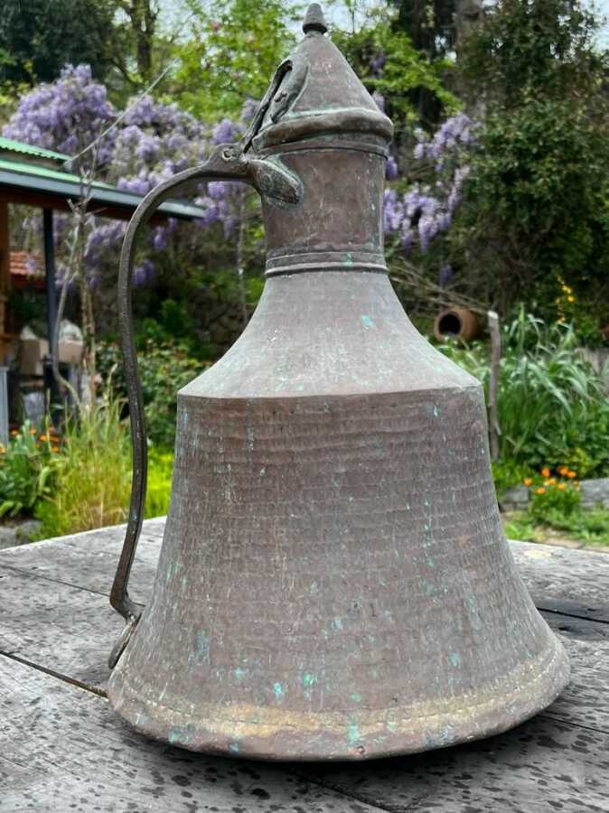
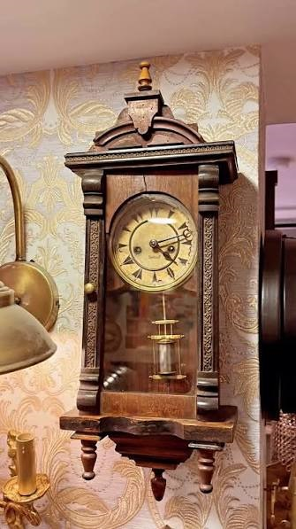
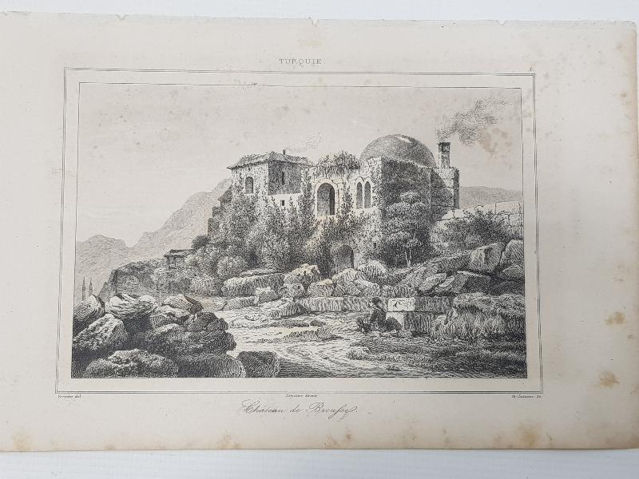
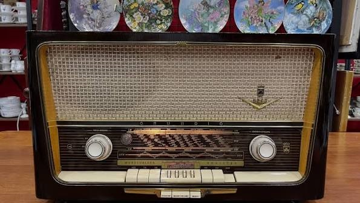

Müzayede ve Koleksiyon Ürünlerimiz Auction & Collection Items
Koza Han dükkanımızda sergilenen seçkin nostaljik parçalar ve aktif müzayede lotları. Exquisite nostalgic pieces and active auction lots displayed in our Koza Han shop.

OSMANLI DÖNEMİ AKINCI KILICI - ŞİMŞİR OTTOMAN ERA AKINCI SWORD - SHAMSHIR
1800 BAŞLARI ORİJİNAL KININDA AHŞAP SAPLI VE SAPINDA REMİZ BULUNAN OSMANLI AKINCILARININ KULLANDIĞI NADİR AKINCI KILICI - ŞİMŞİR. UZUNLUK: 100 CM EARLY 1800s RARE OTTOMAN AKINCI SWORD (SHAMSHIR) IN ORIGINAL SCABBARD WITH WOODEN HILT AND INSCRIPTION. LENGTH: 100 CM

OSMANLI DÖNEMİ ÇOK NADİR İPEK HEREKE SECCADE OTTOMAN ERA VERY RARE SILK HEREKE PRAYER RUG
ETRAFI AYETLERLE BEZELİ ALT VE ÜST KISMINDA MÜSENNA TEKNİĞİYLE KUFİ YAZILI BESMELE-İ ŞERİF YAZILMIŞ OSMANLI DÖNEMİ EL DOKUMA ÇOK NADİR İPEK HEREKE SECCADE. BOYUT: 96 X 57 CM HANDWOVEN OTTOMAN SILK HEREKE PRAYER RUG ADORNED WITH VERSES AND KUFIC CALLIGRAPHY. SIZE: 96 X 57 CM
Seçkin Koleksiyon Parçaları Exclusive Collection Pieces

Bakır Güğüm
19. yy · Copper ewer, 19th c.
4.500 TL

Duvar Saati
1920'ler · Wall clock, 1920s
7.800 TL

Bursa Gravürü
1880 · Bursa engraving, 1880
Fiyat sorunuz Price on request

Lambalı Radyo
1950'ler · Valve radio, 1950s
3.200 TL
Biz Kimiz? — Tarihin Kalbinde Bir Yaşam Kültürü Who We Are? — A Culture of Living in the Heart of History
Bursa'nın tarihi kalbi Koza Han'da otuz yılı aşkın süredir faaliyet gösteren Kozahan Antika; Osmanlı dönemine ait el işçiliği bakır eserlerden nadide saatlere, dönem gravürlerinden antika radyolara kadar geçmişin izlerini bugüne taşıyor. Ahmet Bulut öncülüğünde yürütülen koleksiyonculuk serüvenimiz, her bir eserin ruhunu koruyarak onları yeni sahipleriyle buluşturmayı amaçlar. Operating for over thirty years in Koza Han, the historical heart of Bursa, Kozahan Antika carries the traces of the past into the present, ranging from handcrafted Ottoman copper works to rare clocks, period engravings, and vintage radios. Led by Ahmet Bulut, our collection journey aims to unite each artifact with its new owners while preserving its unique soul.